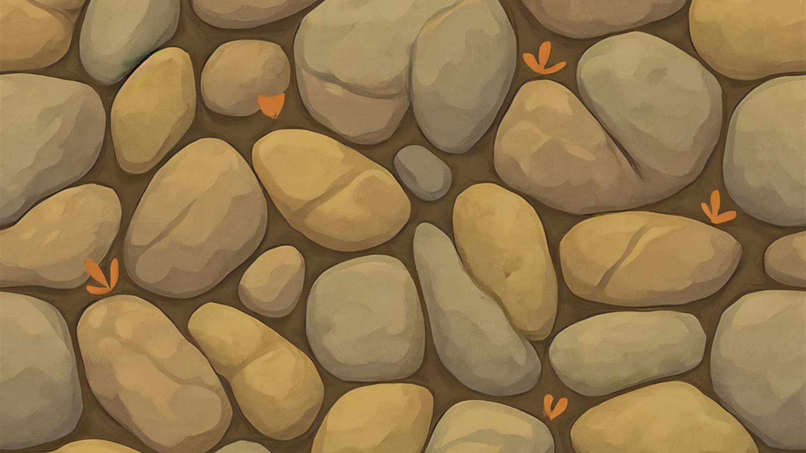
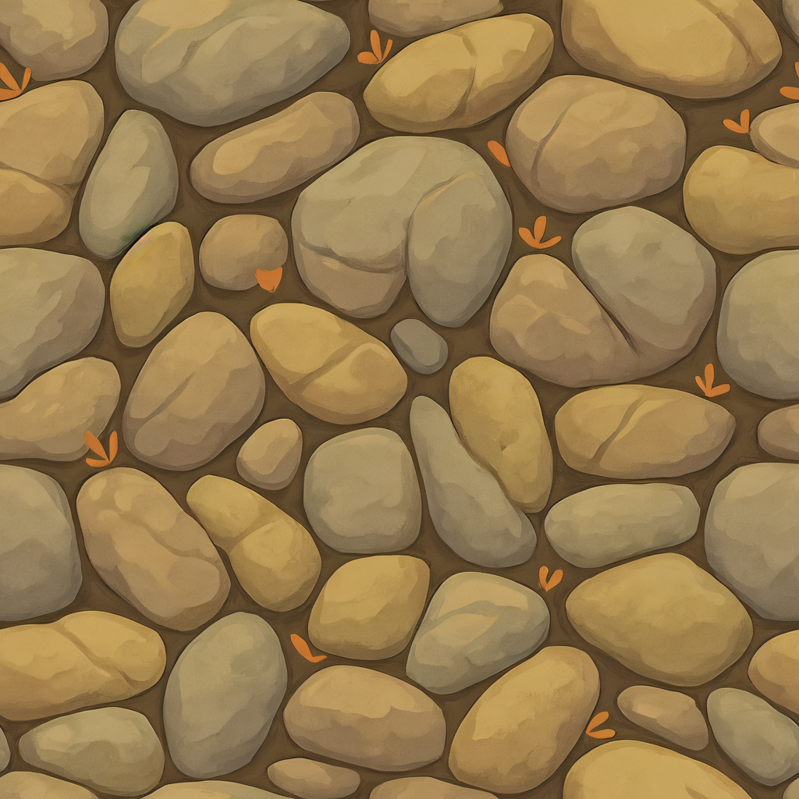
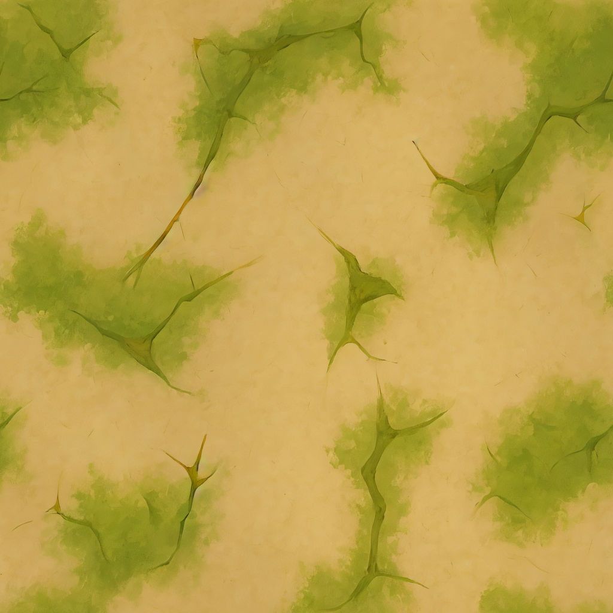

AI-first / Three.js game engine
NGIN
Describe the game.
The modules already walk.
Alpha Three.js WebGPU engine. Walking, cars, boats, and physics are built. In active development. Prompt the rest.
Texture / painterly cobblestone
- Renderer
- Three.js 0.186 / WebGPU
- Simulation
- Jolt 1.1.0 / WASM
- Architecture
- ES modules Static HTML
- Toolchain
- No build step PHP local server
From folder to playable.
Open NGIN in your AI editor. Build your game in its own folder. The engine and sandbox stay unchanged.
-
Run locally
Open a terminal in the NGIN folder and start a PHP server.
localhost:8080/game.htmlphp -S localhost:8080 -
Give your AI the context
Start with the NGIN prompt and agent rules. Describe your game and name the one folder the AI may edit.
Open the AI prompt -
Build a separate game
Copy
New-game guidegames/template/into your own game folder. Launch its page and verify the engine and demo are unchanged.
Modules the AI is supposed to reuse
A material library to build on.
Painterly wood, stone, plaster, and terrain. Simple color textures, ready for your world.
 Worn crate Wood / props
Worn crate Wood / props

Cobblestone Stone / paving
Mossy plaster Walls / weatheredYou write the prompt. NGIN keeps the defaults.
Use NGIN. Build only in games/my-game/. Keep the engine and sandbox unchanged. A person walks on grass, drives a truck, and takes a boat across a pool. Do not invent walking, cars, or water from scratch.
How to build a traversal level
Use NGIN walking. Third person, drag to look. Build a courtyard with stairs, a ramp, and a trampoline. Add matching colliders to every solid surface. Keep the block character and default movement.
Walking moduleHow to add a delivery loop
Use NGIN driving, carry, and inventory. Add a truck and orange crates. E enters the truck, F carries, G stows. Add a marked delivery area and count crates delivered. Do not rewrite vehicles or carry.
Carry moduleHow to add water and atmosphere
Use NGIN water, boats, and day/night. A pool with a fishing boat, start at dusk, and enable rain. Keep buoyancy and the existing sky system. Add my game logic separately.
Water module